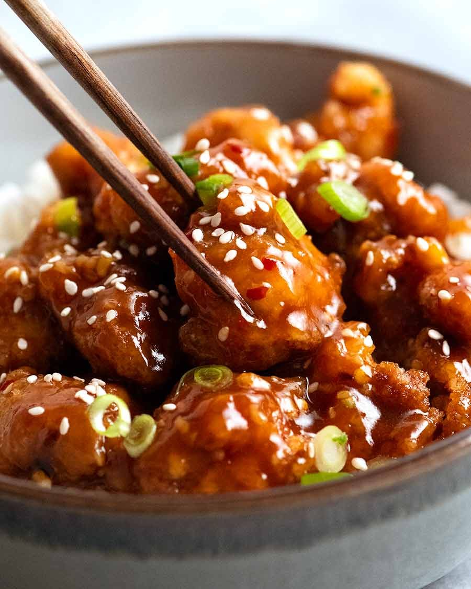

General Tso's Chicken

Description
Not actually general tso's chicken, but a modified form of the actual recipe. Substitutes oyster sauce for hoisin, and gochujang for chilli sauce. The trick is to absolutely dredge it in cornflour, so that when it is added to the sauce after being fried, it drinks it up and makes it extra-delicious!
Ingredients
Sauce
- 3 tbsp light soy sauce
- 1 tbsp oyster sauce
- 1 tbsp rice/white wine vinegar
- 2 tsp gochujang
- 1 tsp sesame oil
- 2 tbsp brown sugar
- 1 tbsp cornflour
- 3/4 cup of chicken stock
Chicken
- 600g boneless, skinless chicken thighs, cut into bite-sized chunks
- 1 tsp ginger, grated
- 1 tsp garlic, grated
- Enough cornflour to dredge the chicken completely
Aromatics for sauce
- 2 tbsp oil
- 2 tsp ginger, finely diced
- 2 cloves garlic, finely chopped
- 1/2 tsp red chilli flakes
Garnish (optional)
- Spring onions
- Sesame seeds
Instructions
- Mix the first five sauce ingredients together, leaving out the sugar, cornflour, and stock.
- Take out 2 tbsp of the sauce mix and combine it with the chicken. Add the grated ginger and garlic, then leave for 30 mins.
- Add the sugar, cornflour, and stock to the sauce mix.
- Add the cornflour to a bowl, then add the chicken, mixing to completely coat. When the chicken is coated to your liking, pick up the pieces, shake them off, and put them into the air fryer basket.
- Cook the chicken for 7 minutes on 200C.
- While the chicken is cooking, add the aromatic's oil to a pan, heat it, then saute the rest of the aromatics until the garlic is light golden.
- Add the sauce mix to the pan, bring it to a simmer, and stir occasionally until it is thick enough to draw a path across the pan base.
- When the chicken is done an the sauce is thick enough, remove the pan from the heat and toss it in the sauce. Transfer to serving plate, garnish, and serve asap!